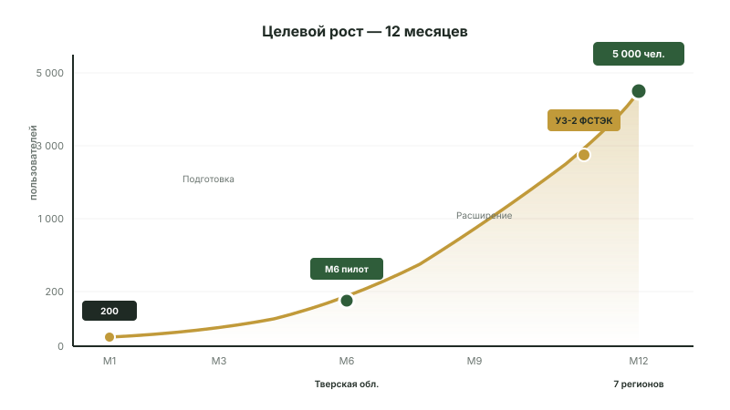

Российский RegTech на подъёме регуляторного давления
Сервис для земельных собственников РФ. Стартует на пиковом моменте: ужесточение 101-ФЗ + введение оборотных штрафов до 500 млн ₽ + спутниковый мониторинг + цифровая трансформация ФНС/Росреестра. Окно 24–36 месяцев до повторения американских AgTech-моделей.

Целевые метрики пилота и промышленной эксплуатации.
Воронка целевых клиентов
Lean-пилот в Тверской области (Россельхознадзор 2024 — 4 310 нарушений). Standard +Ярославская +Калужская. Phase 2 экспансия — ещё 3 региона ЦФО.
Источники: Россельхознадзор пресс-релизы 2024–2025, Tverlife (Q1 2026), МК Ярославль (окт 2025), ФЗ-307 от 08.08.2024, ПП-826 от 31.05.2025, ФЗ-420 от 30.11.2024, 101-ФЗ ред. от 29.12.2025.
Lean-валидация → Standard-масштабирование
KPI v2.0 переписан после правки E5 (универсальная экспертиза 11.05.2026): «GMV ₽50M/мес к M8» из v1.0 — hockey-stick, нереалистично. Ниже — защитимые цели. ARPU ₽50–300K за кейс (правка E2) — это сложное юр-сопровождение, не консультация LegalTech.
| Метрика | Lean пилот (М4 Тверская) | Standard (М10, 3 региона) |
|---|---|---|
| Платных кейсов закрыто | 20+ за 8 недель | 100+ накопительно |
| GMV/мес (выручка платных тарифов) | 0,5–3M ₽ | 15M ₽ (vs 50M в v1.0) |
| Зарегистрированных пользователей | 200–500 | 3 000–5 000 |
| Аккредитованных юристов | 5–8 (Тверская) | 15–24 (3 региона) |
| Регионов в работе | 1 (Тверская) | 3 (Тверская + Ярославская + Калужская) |
| Доля кейсов с подключением юриста | ≥ 30% | ≥ 35% |
| NPS | ≥ 30 | ≥ 50 |
| ИСПДн УЗ-2 аттестация | Аудит начат | Аттестован (vs М7 в v1.0) |
| LOI на Series A pre-seed | — | ₽20–35M подписан |
Mid ₽25–28M · High ₽35–38M · post-DD ₽18–22M
Методология IVS 105 + ФСО V 2022. Weighted reconciliation 5 подходов (Cost 35% / Income 20% / Market 15% / Venture-stage 20% / Scenario Optionality 10%). Sanity check SoTP сходится в пределах ±10%.
Mid (defensible)
₽25–28M
Снижено с ₽30M v1.0: −Lack of Key Person Discount 7,5% (Bus-factor 1) + регуляторный риск в Bear-сценарии.
High (со всеми оговорками)
₽35–38M
Снижено с ₽45M v1.0: реалистично выполнимы только 3 из 5 действий за 60 дней (правка E6).
Post-DD Big-4
₽18–22M
После шести коррекций Big-4 transaction advisory (правка E10): pre-validation gap, ЕГРН-выписки, Bus-factor. Снимается выполнением Блока A (custdev, со-фаундер, LOI).
Disclaimer: Оценка — indication for internal strategic use по IVS 105 + ФСО V 2022. НЕ transaction-grade. Для Series A pre-seed, M&A или налогов — требуется лицензированный оценщик по 135-ФЗ (стоимость ₽400–700K, срок 4–6 нед). Сценарий обсуждения с family office / strategic investor (РСХБ, Сбер, аграрный фонд): диапазон ₽18–35M. С серьёзным институциональным VC (РВК/ФРИИ) — IRR ниже требуемых 30–45% pre-MVP. Рекомендуемый источник pre-seed капитала — грант РФРИТ (до ₽20M невозвратных).
Чем мы отличаемся от существующих юр.фирм
| Параметр | Юр.фирма | Земельный Сервис |
|---|---|---|
| Стоимость первичной диагностики | 10–30 тыс ₽ | Бесплатно |
| Время до плана действий | 5–14 дней | 24 часа |
| Специализация на 101-ФЗ | Часто общая практика | Только B-3 |
| Региональная адаптация | Узкая, по месту нахождения | 3 региона на старте → 6 в Phase 2 |
| Доступность 24/7 | Раб.часы | Чат + AI круглосуточно |
| Полная стоимость кейса (B-3) | 50–200 тыс ₽ | Pre-litigation 50–80K / Полное представительство 150–300K |
| Документы в архиве | Часто на бумаге | Цифровой архив + экспорт |
Мы не конкурируем с юристами — мы дополняем их. Сложные кейсы маршрутизируются юристам через AI-6 (платформа становится для них каналом продаж). Простые кейсы — ведутся пользователем самостоятельно. Это win-win.
Почему именно сейчас
Сервис стартует на пересечении трёх трендов. Каждый из них — независимый драйвер спроса. Все вместе — формируют окно возможностей.
1. Ужесточение 101-ФЗ
ФЗ-307 от 08.08.2024 (вступил 01.03.2025) расширил основания для изъятия. ПП-826 от 01.09.2025 закрепил спутниковый мониторинг как доказательство. Сроки устранения сократились до минимума 6 мес.
2. Цифровая трансформация Росреестра
Все процедуры с земельными участками — постепенно переходят в цифровой формат. ЕГРН доступен через API. ЕСИА используется для аутентификации в гос.сервисах. Тренд — необратимый.
3. Рост AI-применения
YandexGPT 5.1 Pro и GigaChat Ultra достигли уровня практического применения в юр.задачах. Стоимость токенов снизилась в 3 раза в 2026 (от GigaChat). Локальные embeddings — стандарт.
Архитектурные решения, снижающие риски
Юридический риск (ст. 170 ГК)
Митигация: сервис — информационно-консультационный, не оказывает юр.помощь напрямую. Все процессуальные действия — через аккредитованного юриста с УКЭП. Меморандум о легальности B-3 утверждается до первой сделки.
Регуляторный риск (152-ФЗ ФЗ-420)
Митигация: УЗ-2 заложен в архитектуре. Аттестация ФСТЭК запланирована на М11. Уведомление РКН в 24 ч. Хеширование ПДн. Полное соответствие — конкурентное преимущество, не нагрузка.
Технический риск (LLM)
Митигация: A/B routing между YandexGPT и GigaChat — отказ одного провайдера не останавливает сервис. Резервный канал ЕГРН. Fallback на правила при низкой уверенности AI.
Бизнес-риск (низкая конверсия пилота)
Митигация: Тверская область выбрана как стартовый регион из-за объёма проблемы (99% в нарушениях). Партнёрства с местными АПК и СМИ. План привлечения 500+ pre-регистраций до старта пилота.
Smart money, а не просто капитал
Регуляторный опыт
Помощь в навигации 152-ФЗ, КИИ, реестра отеч. ПО. Контакты в ФСТЭК, Минцифры, профильных министерствах.
АПК-индустрия
Партнёрства с агрохолдингами, КФХ-ассоциациями. Понимание реальных болей собственников земли.
RegTech-знания
Опыт продаж B2C продуктов с регуляторной нагрузкой. Понимание unit-экономики в сегменте.